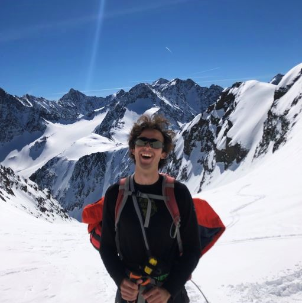

<!DOCTYPE html>
<html lang="en">

<head>
    <meta charset="utf-8" />
    <meta http-equiv="x-ua-compatible" content="ie=edge, chrome=1" />
    <title>TUMap</title>
    <style>
        html,
        body {
            margin: 0;
            padding: 0;
            height: 100%;
            width: 100%;
        }
        
        #devTestingDemo {
            height: 100%;
            width: 100%;
        }
    </style>

<link rel="stylesheet" href="https://cdnjs.cloudflare.com/ajax/libs/leaflet/1.2.0/leaflet.css" />
<script src="https://cdnjs.cloudflare.com/ajax/libs/leaflet/1.2.0/leaflet.js"></script>

<link rel="stylesheet" href="https://unpkg.com/leaflet-control-geocoder/dist/Control.Geocoder.css" />
<script src="https://unpkg.com/leaflet-control-geocoder/dist/Control.Geocoder.js"></script>

<script src='https://api.mapbox.com/mapbox.js/plugins/leaflet-fullscreen/v1.0.1/Leaflet.fullscreen.min.js'></script>
<link href='https://api.mapbox.com/mapbox.js/plugins/leaflet-fullscreen/v1.0.1/leaflet.fullscreen.css' rel='stylesheet' />

<link rel="stylesheet" href="https://cdn.jsdelivr.net/npm/leaflet.locatecontrol/dist/L.Control.Locate.min.css" />
<script src="https://cdn.jsdelivr.net/npm/leaflet.locatecontrol/dist/L.Control.Locate.min.js" charset="utf-8"></script>

</head>

<body>
<div id="devTestingDemo"></div>
<script>

// OpenTopoMap
let osm = L.tileLayer('https://{s}.tile.opentopomap.org/{z}/{x}/{y}.png', {
    attribution: '&copy; <a href="https://opentopomap.org/credits">OpenTopoMap</a>'
});

// Bergfex OSM
let bergfexOSM = L.tileLayer('http://maps.bergfex.at/osm/standard/{z}/{x}/{y}.jpg', {
    attribution: '&copy; <a href="https://www.bergfex.at/impressum/">Bergfex OpenStreetMap</a>'
});

// Sentinel Hub WMS service
// tiles generated using EPSG:3857 projection - Leaflet takes care of that
let baseUrl = "https://services.sentinel-hub.com/ogc/wms/f96088e0-a9b8-4156-93b3-5c9b02f239bc";

// sentinel2 layer True Color
let sentinelHub_TrueColor_maxcc20 = L.tileLayer.wms(baseUrl, {
    tileSize: 512,
    attribution: '&copy; <a href="https://sentinels.copernicus.eu/web/sentinel/home" target="_blank">Copernicus</a>',
 	 	 	 	maxcc:20, 
 	 	 	 	minZoom:1, 
 	 	 	 	maxZoom:18,
 	 	 	 	preview: 2,
 	 	 	 	format: "image/jpg",
 	 	 	 	preset:"TRUE_COLOR_VISUALIZATION", 
 	 	 	 	layers:"TRUE_COLOR_VISUALIZATION,DATE", 
 	 	 	 	time:"2021-05-10/None", 
});

// sentinel2 layer NDVI
let sentinelHub_NDVI_maxcc20 = L.tileLayer.wms(baseUrl, {
    tileSize: 512,
    attribution: '&copy; <a href="https://sentinels.copernicus.eu/web/sentinel/home" target="_blank">Copernicus</a>',
 	 	 	 	maxcc:20, 
 	 	 	 	minZoom:1, 
 	 	 	 	maxZoom:18,
 	 	 	 	preview: 2,
 	 	 	 	format: "image/jpg",
 	 	 	 	preset:"NDVI_VISUALIZATION", 
 	 	 	 	layers:"NDVI_VISUALIZATION,DATE", 
 	 	 	 	time:"2021-05-10/None",
});

// sentinel2 layer SnowME
let sentinelHub_SnowME_maxcc20 = L.tileLayer.wms(baseUrl, {
    tileSize: 512,
    attribution: '&copy; <a href="https://sentinels.copernicus.eu/web/sentinel/home" target="_blank">Copernicus</a>',
 	 	 	 	maxcc:20, 
 	 	 	 	minZoom:1, 
 	 	 	 	maxZoom:18,
 	 	 	 	preview: 2,
 	 	 	 	format: "image/jpg",
 	 	 	 	preset:"SNOWME", 
 	 	 	 	layers:"SNOWME,DATE", 
 	 	 	 	time:"2021-05-10/None",
});

// sentinel2 layer BurnME
let sentinelHub_BurnME_maxcc20 = L.tileLayer.wms(baseUrl, {
    tileSize: 512,
    attribution: '&copy; <a href="https://sentinels.copernicus.eu/web/sentinel/home" target="_blank">Copernicus</a>',
 	 	 	 	maxcc:20, 
 	 	 	 	minZoom:1, 
 	 	 	 	maxZoom:18,
 	 	 	 	preview: 2,
 	 	 	 	format: "image/jpg",
 	 	 	 	preset:"BURNME", 
 	 	 	 	layers:"BURNME,DATE", 
 	 	 	 	time:"2021-05-10/None",
});

// DEFINE MAP
let baseMaps = {
    'OpenTopoMap': osm,
    'Bergfex OpenStreetMap': bergfexOSM,
};
let overlayMaps = {
    'True Color': sentinelHub_TrueColor_maxcc20,
    'NDVI': sentinelHub_NDVI_maxcc20,
    'SnowME': sentinelHub_SnowME_maxcc20,
    'BurnME': sentinelHub_BurnME_maxcc20,
}

// INITIALIZE MAP
var center = [48.14926044621638, 11.568517190895264]; // lat,lng in EPSG:4326
let map = L.map('devTestingDemo', {
    center: center, 
    zoom: 11,
    zoomSnap: 0.25,
    zoomDelta: 1,
    layers: [bergfexOSM, sentinelHub_TrueColor_maxcc20],
});

var southWest = L.latLng(47.2, 8.8);
var northEast = L.latLng(50.6, 13.9);
var bounds = L.latLngBounds(southWest, northEast);

//map.setMaxBounds(map.getBounds());
//map.setMaxBounds(bounds);

map.addControl(new L.control.layers(baseMaps, overlayMaps))

map.addControl(new L.Control.Fullscreen({
    title: {
        'false': 'View Fullscreen',
        'true': 'Exit Fullscreen'
    },
    position: 'topleft',
}));

map.addControl(L.control.locate({
    position: 'topleft',
    setView: 'untilPanOrZoom',
    flyTo: true,
    cacheLocation: true,
    showCompass: true,
    drawCircle: true,
    drawMarker: true,
    strings: {
        title: "LocateME!"
    }
}));

map.on('click',function(e){ // check order the other way round such that attributes do not exist before the've been shown once
    if(map.hasLayer(warningpopup)){
        map.removeLayer(warningpopup)
        welcomepopup2.addTo(map)
    }
    else{}
    if(map.hasLayer(welcomepopup)){
        map.removeLayer(welcomepopup)
        warningpopup.addTo(map)
    }
    else{}
})

// GEOCODER
geocoder = L.Control.geocoder({
    defaultMarkGeocode: false,
    position: 'topleft'
})
geocoder.on('markgeocode', function(e) {
    var bbox = e.geocode.bbox;
    var poly = L.polygon([
       bbox.getSouthEast(),
       bbox.getNorthEast(),
       bbox.getNorthWest(),
       bbox.getSouthWest()
    ])//.addTo(map);
    map.fitBounds(poly.getBounds());
}).addTo(map);

// WELCOME
var welcomemessage = "<h1>Welcome to TUMap!</h1><p>We are working on this mapping application at the Chair of Remote Sensing Technology (LMF) at the Technical University of Munich (TUM) in our leisure time for fun. Hence, you are free to use it the way you like as long as you credit us properly and help spreading the message!<br/>(Click on the map to close this popup and start exploring!)</p><p>Best<br/><b>Michael Engel,<br/>Chair of Remote Sensing Technology,<br/>Technical University of Munich</b></p>"
var welcomepopup = L.popup({
    maxWidth: 512,
    maxHeight: "auto",
    keepInView: true,
    closeButton: false,
    closeOnClick: false,
})
	.setContent(welcomemessage)
	.setLatLng(center)
	.openOn(map);

var warningmessage = "<h1>DISCLAIMER</h1><p>Please note that all information provided by this tool is experimental and we explicitely exclude any responsibility of ours for the things you are doing with it!</p><p>We are changing credentials for our datasets regularly in an irregular manner such that there is no possibility to misuse them except you have some very fancy tricks. If you still should try to misuse our service, we will find out and take care of it/you!</p><p>Best<br/><b>Michael Engel,<br/>Chair of Remote Sensing Technology,<br/>Technical University of Munich</b></p>"
var warningpopup = L.popup({
    maxWidth: 512,
    maxHeight: "auto",
    keepInView: true,
    closeButton: false,
    closeOnClick: false,
})
	.setContent(warningmessage)
	.setLatLng(center)

var welcomemessage2 = "<h1><font color=#fff>_.</font> Stay fascinated! Keep your enthusiasm! <font color=#fff>_.</font></h1>"
var welcomepopup2 = L.popup({
    maxWidth: 512,
    maxHeight: "auto",
    keepInView: true,
    closeButton: false,
    closeOnClick: true,
})
	.setContent(welcomemessage2)
	.setLatLng(center)

        </script>
</body>
</html>
